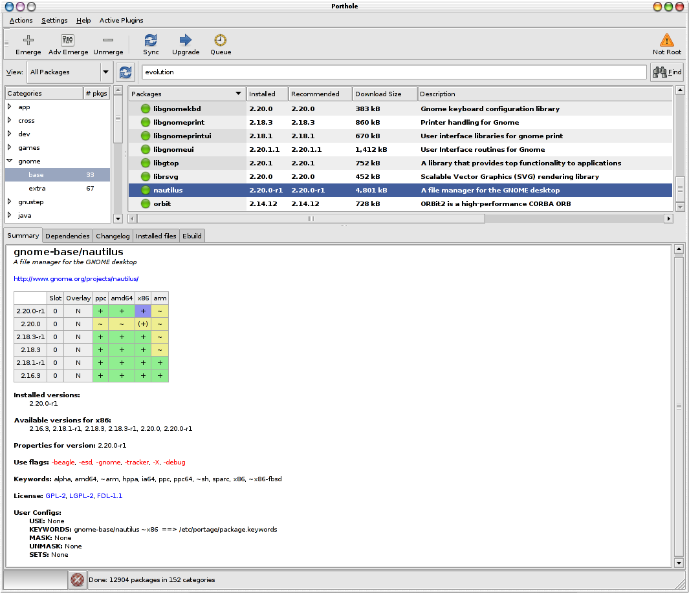

Main Window
General Features
A word about GUI interfaces: depending on the windowing system
and theme you have installed, the icons used by Porthole may differ radically.
from this help manual.
So if the illustrations in this manual don't look EXACTLY like yours,
try to be open minded about it.
Some of the built-in features include:
- The tool bar can be moved out of the window using drag & drop.
- The size of the panes are adjustable.
Just float your mouse over the dividing bar until the mouse pointer
changes into the resize icon, then right click and drag the bar to resize it.
- Porthole will remember the size of your main window and
the pane sizes between sessions.
- Tool tips. Hover the mouse over a button or icon for a brief description.
The main window is divided into a menu bar, a tool bar, package tree view,
package list view and a tabbed package info.
Menu Bar
The menu bar has three main options: Action, Settings and Help.
Action Menu
- Emerge Package - Install/reinstall the selected package.
- Advanced Emerge Package - Install/reinstall the selected package,
but gives you fine-grained control of emerge options, use flags and keywords.
- Unmerge Package - Uninstall the selected package.
- Sync Tree - Sync the portage tree.
- Upgrade Packages - Display a list of all packages that can be
upgraded.
- Open Emerge Log - Open an existing emerge log.
- Run Custom Command - Run custom command.
- Quit - Exit the program.
Settings Menu
- Pretend - Prevents emerges and updates from installing
and displays WHAT
would have been installed only.
- Allow Downgrades - Allows emerge and upgrade to install
older versions,
if the ebuild directs.
- Only Fetch - Just downloads the files needed to install, but
does not actually install the package.
- Verbose - Produce maximum output while emerging/unmerging.
- Search Descriptions - Look through descriptions as well as names
when searching for a package.
Help Menu
- About - Displays version, authors and links to home page
and help system.

Figure 1. Porthole Main Window
Tool Bar
The tool bar provides an alternative to the menu bar
and can save you a click or two.
TIP! The toolbar has its keyboard short cuts are underlined--hold
down the ALT key then press the short-cut key to activate.
Emerge - Install/reinstall the selected package.
Adv Emerge - Install/reinstall the selected package,
but gives you fine-grained control of emerge options, use flags and keywords.
Unmerge - Uninstall the selected package.
Sync - Sync the portage tree.
Upgrade - Display a list of all packages that can be upgraded.
View Selector
The view selector let's you choose between the following views:
- All Packages - Display all available packages in the tree view.
- Installed Packages - Display only the packages installed on
your system.
- Search Results - Display the packages meeting your search criteria.
In this view there is no treeview pane.
- Upgradeable Packages - Display only the packages that can be upgraded.
In this view there is no treeview pane.
Find
TIP! Selecting "Search descriptions" or pressing Ctrl-D will
let you search the package descriptions too!
Enter a fragment of text in the input box next to the find button.
Clicking the find button or pressing enter will start the search.
The system will automatically switch to the Search results view
when the search is complete.
The search engine will find any occurrence of the selected text even if it is
in the middle or end of a word.
Package Category Treeview
Package List
In the all and installed packages view, the short name of the
packages in the selected category are displayed.
In the search and upgrageable views, the full package name is displayed.
If the package is installed
Package Information
Summary Tab
Dependencies Tab
Change Log
Installed Files